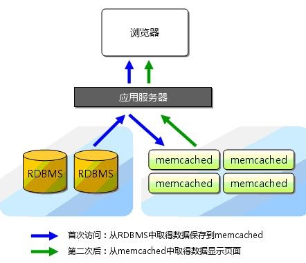

Memcached
1. 介绍¶
Memcached是一个自由开源的，高性能，分布式内存对象缓存系统。
emcached是以LiveJournal旗下Danga Interactive公司的Brad Fitzpatric为首开发的一款软件。现在已成为mixi、hatena、Facebook、Vox、LiveJournal等众多服务中提高Web应用扩展性的重要因素。
Memcached是一种基于内存的key-value存储，用来存储小块的任意数据（字符串、对象）。这些数据可以是数据库调用、API调用或者是页面渲染的结果。
Memcached简洁而强大。它的简洁设计便于快速开发，减轻开发难度，解决了大数据量缓存的很多问题。它的API兼容大部分流行的开发语言。
本质上，它是一个简洁的key-value存储系统。一般的使用目的是，通过缓存数据库查询结果，减少数据库访问次数，以提高动态Web应用的速度、提高可扩展性。

Memcached 官网：http://memcached.org/。
- 1.Memcached 是什么。作用是什么？
Memcached 是开源的，高性能的内存缓存系统或者内存缓存软件。从名字上看mem是内存，chache就是缓存的意思，Memcached通过在事先规划好的内存空间中临时缓存数据库中的各类数据，以达到减少业务对数据库的直接高并发访问，从而达到提升数据的访问性能，加速网站动态应用服务器的能力。
- 2.Memcached 服务在企业集权架构中应用场景？
1） 作为数据的前端缓存应用。 A. 完整缓存（易） 静态缓存 例如： 商品分类，已经商品信息，可事先放到内存里，然后再对外提供数据访问，这个称之为预热，用户让问的时候可以只读取memcached缓存，不在读取数据库。 B. 热点缓存（难） 需要前端web程序的配合，只缓存热点的数据，即缓存经常被访问的数据。 先预热数据库里的基础数据，然后在动态更新，先读取缓存，如果缓存里面没有对应的数据，程序再去读取数据库，程序然后把读取到数据放入缓存存储。 特殊说明： 1.如果碰到电商秒杀等高并发的业务，一定要先预热，或者其他思想实现，例如，秒杀只是获取资格，(JS,node,js),而不是瞬间秒杀到商品。 2.如果数据更新，同时触发缓存更新，防止个用户过期数据。 C.对于持久化缓存存储系统，例如；redis，可以替代一部分数据的存储，一些简单数据业务，投票，统计，好友关注，商品分类等，nosql = not only sql 2）作为集权的session会话共享存储 大规模网站sesson会话保持思路及实践配置
- 3.Memcached 服务在不同企业 业务应用场景中的工作流程？
1. 当web程序需要访问后端数据库获取数据时，会优先访问memcached内存缓存，如果缓存中有数据就直接获取返回前端服务及用户，如果没有数据(没有命中)，在由程序请求后端的数据库服务器，获取到对应的数据后，除了返回给前端服务及用户数据外，还会把数据放到memcached内存中进行缓存，等待下次请求访问，memcached内存始终是数据库的挡箭牌，从而大大减轻数据库的访问压力，提高整个网站架构的响应速度，提升用户体验。 2. 当程序更新，修改或者删除数据库中已有的数据时，会同时发送请求通知memcached已经缓存过的同一个ID的旧数据失效，从而保证memcache中的数据和数据库中的数据一致，如果是在高并发的场合，除了memcached过期的缓存失效外，还会通过相关机制，使得在用户访问新数据前，通过程序预先把更新的过的数据推送到memcached中缓存起来，这样减少数据库的压力，提高命中率。 3. 数据库插件可以再写入更新数据库后，自动抛给MC缓存起来，自身不cache。
- 4.Memcached 服务分布式集群如何实现？
特殊说明；memcached集群和web服务集群是不一样的。所有memcached数据的总和 才是数据库的数据。 A. 程序段实现 程序加载所有memcached的ip列表，通过key做hash（一致性哈希，目的是保证一个节点宕机后数据更新最低），每天memcached都是部分数据 B. 负载均衡器 通过对key做hash（一致性hash） 一致性hash的算法的目的是不但保证每个对象只读求一个对应的服务器，而且当节点宕机后缓存服务器的更新重新分配比例降到最低。 http://blog.csdn.net/cutesource/article/details/5848253
- 5.Memcached 服务特点及工作原理是什么？
A. 全部数据存在内存中，无持久性存储设置，重启服务数据就丢失 B. 节点之间相互独立 C. 异步I/O 模型，基于libevent模型的事件通知机制 D. 数据是以Key/value键值对形式存在的 E. C/S模式架构，c语言编写，总代码2000多行 F. 当内存缓存的数据容量达到启动时候预设定的内存值时候，就自动使用LRU算法清除过期的缓存数据 G. 可以对村塾的数据设置过期时间，这样过期后的数据自动被清除，服务本身不会被监控过期，而是在访问的时候查看key的时间戳判断是否过期。 H. Memcache内存分配机器是对特定的内存进行分块，再把多个块分为一组。
2. 安装测试¶
2.1 安装¶
wget http://www.memcached.org/files/memcached-1.5.12.tar.gz tar xf memcached-1.5.12.tar.gz cd memcached-1.5.12 ./configure --prefix=/usr/local/memcached make && sudo make install echo $?
root@leco:/usr/local/src# wget http://www.memcached.org/files/memcached-1.5.12.tar.gz --2019-02-20 09:55:44-- http://www.memcached.org/files/memcached-1.5.12.tar.gz 正在解析主机 www.memcached.org (www.memcached.org)... 107.170.231.145 正在连接 www.memcached.org (www.memcached.org)|107.170.231.145|:80... 已连接。 省略。。。 root@leco:/usr/local/src# ls memcached-1.5.12.tar.gz memcached-1.5.12.tar.gz root@leco:/usr/local/src# tar xf memcached-1.5.12.tar.gz root@leco:/usr/local/src# cd memcached-1.5.12 root@leco:/usr/local/src/memcached-1.5.12# ./configure --prefix=/usr/local/memcached root@leco:/usr/local/src/memcached-1.5.12# make && sudo make install root@leco:/usr/local/src/memcached-1.5.12# echo $? 0 # 添加环境变量 root@leco:/usr/local/src/memcached-1.5.12# vim /etc/profile root@leco:/usr/local/src/memcached-1.5.12# tail -1 /etc/profile export PATH=$PATH:/usr/local/memcached/bin root@leco:/usr/local/src/memcached-1.5.12# source /etc/profile
2.2 启动¶
root@leco:~# memcached -d -m 10 -u root -l 0.0.0.0 -p 11211 -c 256 -P /tmp/memcached.pid root@leco:~# netstat -lnp|grep 11211 tcp 0 0 0.0.0.0:11211 0.0.0.0:* LISTEN 7862/memcached unix 2 [ ACC ] 流 LISTENING 100911211 11507/unity-files-d @leco-com.canonical.Unity.Scope.files.T5294429510698002 root@leco:~# telnet localhost 11211 Trying 127.0.0.1... Connected to localhost. Escape character is '^]'. 如果出现以上内容就代表启动成功！
参数说明 -d |是启动一个守护进程 -m |是分配给Memcache使用的内存数量，单位是MB -u |是运行Memcache的用户 -l |是监听的服务器IP地址 -p |是设置Memcache监听的端口,最好是1024以上的端口 -c |选项是最大运行的并发连接数，默认是1024，按照你服务器的负载量来设定 -P |是设置保存Memcache的pid文件
2.3 设置开机自启动¶
echo 'memcached -d -m 10 -u root -l 0.0.0.0 -p 11211 -c 256 -P /tmp/memcached.pid' >> /etc/rc.local
3. 命令¶
语法
command_name key flags exptime bytes value \r\n
参数解释
command_name 是set add replace get delete key key 用于查找缓存值 flags 可以包括键值对的整型参数，客户机使用它存储关于键值对的额外信息 expiration time 在缓存中保存键值对的时间长度（以秒为单位，0 表示永远） bytes 在缓存中存储的字节点 value 存储的值（始终位于第二行） set 存储次数据 add 存储次数据，只在服务器未保存此键值的数据时
| 参数 | 说明 |
|---|---|
| command | set无论如何都进行存储，add只有数据不存在时进行添加 |
| key | 存储的key的名字，长度最多为250个字符，不包含空格和控制字符 |
| flags | 是一个16位的无符号的整数(以十进制的方式表示)。该标志将和需要存储的数据一起存储,并在客户端get数据时返回 |
| exptime | 过期时间，单位为秒，0为永远，表示用不过期，<30天60*60*24*30为秒数，>30天为unixtime时间戳 |
| bytes | byte字节数，不包含\r\n，根据长度截取存/取的字符串，可以是0，即存空串 |
| version | 版本号，可选的，可不写，这个字断主要是给cas命令用 |
| datablock | 储存的内容value，以\r\n结尾，当然可以包含\r或\n |
| status | STORED/NOT_STORED/EXISTS/NOT_FOUND/ERROR/CLIENT_ERROR/SERVER_ERROR服务端返回的状态标志 |
3.1 set¶
Memcached set 命令用于将 value(数据值) 存储在指定的 key(键) 中。
set 命令用于向缓存添加新的键值对。如果键已经存在，则之前的值将被替换。
存储taotaolinux(key)这个键，值是taotaolinux（10个字符），否他添加不成功 root@leco:/home/leco# printf "set taotaolinux 0 0 10\r\ntaotaolinux\r\n "|nc 127.0.0.1 11211 STORED root@leco:/home/leco# printf "get taotaolinux\r\n"|nc 127.0.0.1 11211 VALUE taotaolinux 0 10 taotaolinux END 以下是存储的字符不对的错误情况 root@leco:/home/leco# printf "set taotaolinux1 0 0 10\r\nccc\r\n "|nc 127.0.0.1 11211 root@leco:/home/leco# printf "get taotaolinux1\r\n"|nc 127.0.0.1 11211 END
3.2 add¶
仅当缓存中不存在键时，add 命令才会向缓存中添加一个键值对。如果缓存中已经存在键，则之前的值将仍然保持相同，并且您将获得响应 NOT_STORED。
root@leco:/home/leco# printf "add taotaolinux 0 0 10\r\ntaotaolinux\r\n "|nc 127.0.0.1 11211 # 因为之前设置了，所以不在存储 NOT_STORED root@leco:/home/leco# printf "add taotaolinux1 0 0 10\r\ntaotaolinux\r\n "|nc 127.0.0.1 11211 STORED
3.3 replace¶
仅当键已经存在时，replace 命令才会替换缓存中的键。如果缓存中不存在键，那么您将从 memcached 服务器接受到一条 NOT_STORED 响应。
oot@leco:/home/leco# printf "replace taotaolinux1 0 0 10\r\nxaimengzhi\r\n "|nc 127.0.0.1 11211 STORED root@leco:/home/leco# printf "get taotaolinux1\r\n "|nc 127.0.0.1 11211 VALUE taotaolinux1 0 10 xaimengzhi END
3.4 append¶
命令用于向已存在 key(键) 的 value(数据值) 后面追加数据。
- 首先在 Memcached 中存储一个键 nosql，其值为 memcached。
- 然后，使用 get 命令检索该值。
- 然后，使用 append 命令在键为 nosql 的值后面追加 "redis"。
- 最后，再使用 get 命令检索该值。
root@leco:/home/leco# printf "set nosql 0 0 9\r\nmemcached\r\n "|nc 127.0.0.1 11211 STORED root@leco:/home/leco# printf "get nosql\r\n "|nc 127.0.0.1 11211 VALUE nosql 0 9 memcached END root@leco:/home/leco# printf "append nosql 0 0 5\r\nredis\r\n "|nc 127.0.0.1 11211 STORED root@leco:/home/leco# printf "get nosql\r\n "|nc 127.0.0.1 11211 VALUE nosql 0 14 memcachedredis END
3.5 prepend¶
命令用于向已存在 key(键) 的 value(数据值) 前面追加数据 。
root@leco:/home/leco# printf "set nosql2 0 0 9\r\nmemcached\r\n "|nc 127.0.0.1 11211 STORED root@leco:/home/leco# printf "get nosql2\r\n "|nc 127.0.0.1 11211 VALUE nosql2 0 9 memcached END root@leco:/home/leco# printf "prepend nosql2 0 0 6\r\nredis_\r\n "|nc 127.0.0.1 11211 STORED root@leco:/home/leco# printf "get nosql2\r\n "|nc 127.0.0.1 11211 VALUE nosql2 0 15 redis_memcached END
3.6 CAS¶
3.7 get¶
获取存储在 key(键) 中的 value(数据值) ，如果 key 不存在，则返回空。
root@leco:/home/leco# printf "get nosql2\r\n "|nc 127.0.0.1 11211 VALUE nosql2 0 15 redis_memcached END
3.8 gets¶
获取带有 CAS 令牌存 的 value(数据值) ，如果 key 不存在，则返回空
root@leco:/home/leco# printf "gets nosql\r\n "|nc 127.0.0.1 11211 VALUE nosql 0 20 7 _name_memcachedredis END
3.9 delete¶
命令用于删除已存在的 key(键)。
root@leco:/home/leco# printf "delete nosql1\r\n "|nc 127.0.0.1 11211 DELETED root@leco:/home/leco# printf "gets nosql1\r\n "|nc 127.0.0.1 11211 END root@leco:/home/leco# printf "delete nosql1\r\n "|nc 127.0.0.1 11211 NOT_FOUND 删除不存在的key，就输出NOT_FOUND
3.10 incr/decr¶
incr 与 decr 命令用于对已存在的 key(键) 的数字值进行自增或自减操作。incr 与 decr 命令操作的数据必须是十进制的32位无符号整数。如果 key 不存在返回 NOT_FOUND，如果键的值不为数字，则返回 CLIENT_ERROR，其他错误返回 ERROR。
root@leco:/home/leco# printf "set num 0 0 2\r\n20\r\n "|nc 127.0.0.1 11211 STORED root@leco:/home/leco# printf "get num\r\n "|nc 127.0.0.1 11211 VALUE num 0 2 20 END root@leco:/home/leco# printf "incr num 5\r\n "|nc 127.0.0.1 11211 25 root@leco:/home/leco# printf "get num\r\n "|nc 127.0.0.1 11211 VALUE num 0 2 25 END root@leco:/home/leco# printf "set num2 0 0 2\r\n20\r\n "|nc 127.0.0.1 11211 STORED root@leco:/home/leco# printf "get num2\r\n "|nc 127.0.0.1 11211 VALUE num2 0 2 20 END root@leco:/home/leco# printf "decr num2 5\r\n "|nc 127.0.0.1 11211 15 root@leco:/home/leco# printf "get num2\r\n "|nc 127.0.0.1 11211 VALUE num2 0 2 15 END
3.11 stas¶
命令用于返回统计信息例如 PID(进程号)、版本号、连接数等。
root@leco:/home/leco# printf "stats\r\n "|nc 127.0.0.1 11211 STAT pid 5991 STAT uptime 41934 STAT time 1552356261 STAT version 1.5.12 STAT libevent 2.0.21-stable STAT pointer_size 64 STAT rusage_user 3.891261 STAT rusage_system 2.563143 STAT max_connections 256 STAT curr_connections 1 STAT total_connections 60 STAT rejected_connections 0 STAT connection_structures 2 STAT reserved_fds 20 STAT cmd_get 28 STAT cmd_set 17 STAT cmd_flush 0 STAT cmd_touch 0 STAT get_hits 20 STAT get_misses 8 STAT get_expired 0 STAT get_flushed 0 STAT delete_misses 1 STAT delete_hits 1 STAT incr_misses 0 STAT incr_hits 1 STAT decr_misses 0 STAT decr_hits 0 STAT cas_misses 0 STAT cas_hits 0 STAT cas_badval 0 STAT touch_hits 0 STAT touch_misses 0 STAT auth_cmds 0 STAT auth_errors 0 STAT bytes_read 1117 STAT bytes_written 3057 STAT limit_maxbytes 10485760 STAT accepting_conns 1 STAT listen_disabled_num 0 STAT time_in_listen_disabled_us 0 STAT threads 4 STAT conn_yields 0 STAT hash_power_level 16 STAT hash_bytes 524288 STAT hash_is_expanding 0 STAT slab_reassign_rescues 0 STAT slab_reassign_chunk_rescues 0 STAT slab_reassign_evictions_nomem 0 STAT slab_reassign_inline_reclaim 0 STAT slab_reassign_busy_items 0 STAT slab_reassign_busy_deletes 0 STAT slab_reassign_running 0 STAT slabs_moved 0 STAT lru_crawler_running 0 STAT lru_crawler_starts 9435 STAT lru_maintainer_juggles 83272 STAT malloc_fails 0 STAT log_worker_dropped 0 STAT log_worker_written 0 STAT log_watcher_skipped 0 STAT log_watcher_sent 0 STAT bytes 438 STAT curr_items 6 STAT total_items 12 STAT slab_global_page_pool 0 STAT expired_unfetched 0 STAT evicted_unfetched 0 STAT evicted_active 0 STAT evictions 0 STAT reclaimed 0 STAT crawler_reclaimed 0 STAT crawler_items_checked 33 STAT lrutail_reflocked 0 STAT moves_to_cold 11 STAT moves_to_warm 5 STAT moves_within_lru 4 STAT direct_reclaims 0 STAT lru_bumps_dropped 0 END
名词解释
pid： memcache服务器进程ID uptime：服务器已运行秒数 time：服务器当前Unix时间戳 version：memcache版本 pointer_size：操作系统指针大小 rusage_user：进程累计用户时间 rusage_system：进程累计系统时间 curr_connections：当前连接数量 total_connections：Memcached运行以来连接总数 connection_structures：Memcached分配的连接结构数量 cmd_get：get命令请求次数 cmd_set：set命令请求次数 cmd_flush：flush命令请求次数 get_hits：get命令命中次数 get_misses：get命令未命中次数 delete_misses：delete命令未命中次数 delete_hits：delete命令命中次数 incr_misses：incr命令未命中次数 incr_hits：incr命令命中次数 decr_misses：decr命令未命中次数 decr_hits：decr命令命中次数 cas_misses：cas命令未命中次数 cas_hits：cas命令命中次数 cas_badval：使用擦拭次数 auth_cmds：认证命令处理的次数 auth_errors：认证失败数目 bytes_read：读取总字节数 bytes_written：发送总字节数 limit_maxbytes：分配的内存总大小（字节） accepting_conns：服务器是否达到过最大连接（0/1） listen_disabled_num：失效的监听数 threads：当前线程数 conn_yields：连接操作主动放弃数目 bytes：当前存储占用的字节数 curr_items：当前存储的数据总数 total_items：启动以来存储的数据总数 evictions：LRU释放的对象数目 reclaimed：已过期的数据条目来存储新数据的数目
3.12 stas items¶
命令用于显示各个 slab 中 item 的数目和存储时长(最后一次访问距离现在的秒数)。
root@leco:/home/leco# printf "stats items\r\n "|nc 127.0.0.1 11211 STAT items:1:number 6 STAT items:1:number_hot 0 STAT items:1:number_warm 2 STAT items:1:number_cold 4 STAT items:1:age_hot 0 STAT items:1:age_warm 463 STAT items:1:age 41411 STAT items:1:evicted 0 STAT items:1:evicted_nonzero 0 STAT items:1:evicted_time 0 STAT items:1:outofmemory 0 STAT items:1:tailrepairs 0 STAT items:1:reclaimed 0 STAT items:1:expired_unfetched 0 STAT items:1:evicted_unfetched 0 STAT items:1:evicted_active 0 STAT items:1:crawler_reclaimed 0 STAT items:1:crawler_items_checked 33 STAT items:1:lrutail_reflocked 0 STAT items:1:moves_to_cold 11 STAT items:1:moves_to_warm 5 STAT items:1:moves_within_lru 4 STAT items:1:direct_reclaims 0 STAT items:1:hits_to_hot 5 STAT items:1:hits_to_warm 5 STAT items:1:hits_to_cold 10 STAT items:1:hits_to_temp 0 END
3.13 stats sizes¶
用于显示各个slab的信息，包括chunk的大小、数目、使用情况等。
root@leco:/home/leco# printf "stats slabs\r\n "|nc 127.0.0.1 11211 STAT 1:chunk_size 96 STAT 1:chunks_per_page 10922 STAT 1:total_pages 1 STAT 1:total_chunks 10922 STAT 1:used_chunks 6 STAT 1:free_chunks 10916 STAT 1:free_chunks_end 0 STAT 1:mem_requested 438 STAT 1:get_hits 20 STAT 1:cmd_set 17 STAT 1:delete_hits 1 STAT 1:incr_hits 1 STAT 1:decr_hits 0 STAT 1:cas_hits 0 STAT 1:cas_badval 0 STAT 1:touch_hits 0 STAT active_slabs 1 STAT total_malloced 1048576 END
3.14 stats slabs¶
命令用于显示所有item的大小和个数。该信息返回两列，第一列是 item 的大小，第二列是 item 的个数。
root@leco:/home/leco# printf "stats sizes\r\n "|nc 127.0.0.1 11211 STAT sizes_status disabled END
3.14 flush_all¶
命令用于清理缓存中的所有 key=>value(键=>值) 对。该命令提供了一个可选参数 time，用于在制定的时间后执行清理缓存操作。
root@leco:/home/leco# printf "stats items\r\n "|nc 127.0.0.1 11211 STAT items:1:number 6 STAT items:1:number_hot 0 STAT items:1:number_warm 2 STAT items:1:number_cold 4 STAT items:1:age_hot 0 STAT items:1:age_warm 620 STAT items:1:age 41568 STAT items:1:evicted 0 STAT items:1:evicted_nonzero 0 STAT items:1:evicted_time 0 STAT items:1:outofmemory 0 STAT items:1:tailrepairs 0 STAT items:1:reclaimed 0 STAT items:1:expired_unfetched 0 STAT items:1:evicted_unfetched 0 STAT items:1:evicted_active 0 STAT items:1:crawler_reclaimed 0 STAT items:1:crawler_items_checked 33 STAT items:1:lrutail_reflocked 0 STAT items:1:moves_to_cold 11 STAT items:1:moves_to_warm 5 STAT items:1:moves_within_lru 4 STAT items:1:direct_reclaims 0 STAT items:1:hits_to_hot 5 STAT items:1:hits_to_warm 5 STAT items:1:hits_to_cold 10 STAT items:1:hits_to_temp 0 END root@leco:/home/leco# printf "flush_all\r\n "|nc 127.0.0.1 11211 OK root@leco:/home/leco# printf "stats items\r\n "|nc 127.0.0.1 11211 END